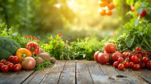

Welcome to Fresh Veggies!
Your source for healthy, fresh produce delivered straight to your door.
Your source for healthy, fresh produce delivered straight to your door.
At Fresh Veggies, we are dedicated to providing farm-fresh produce that's healthy, sustainable, and delicious. Our commitment to supporting local farmers ensures the best quality for our customers.
Spinach, Lettuce, Kale, and more.
Carrots, Potatoes, Beets, and more.
Fresh picks of the season, just for you.
We'd love to hear from you! Reach out for any inquiries or assistance.